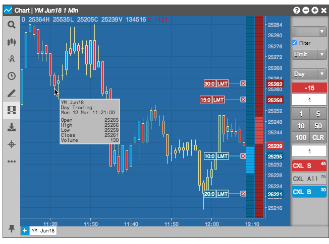

The X_STUDY add-on for X_TRADER provides access to charting and analytics. It requires a separate installation.
In TT, charting is an integrated part of the platform. The Charts widget supports additional chart types, drawing tools and technical indicators. It also supports trading from a chart and can display your orders and fills on the chart.

With Charts, you can: